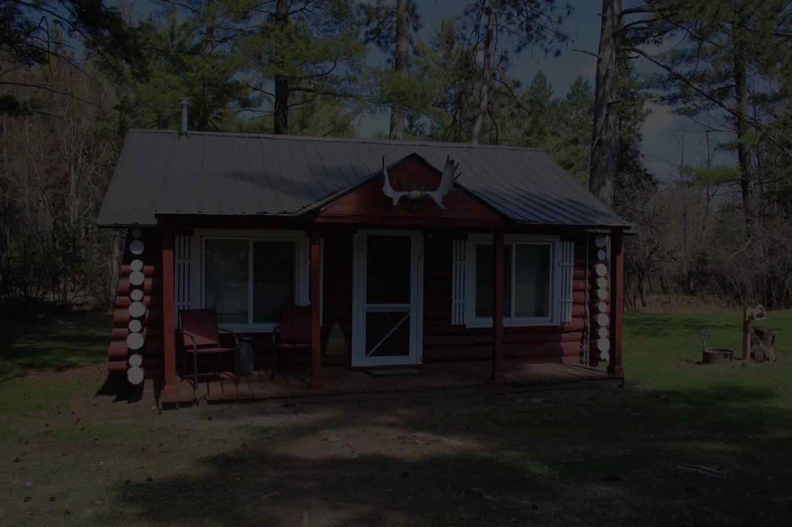
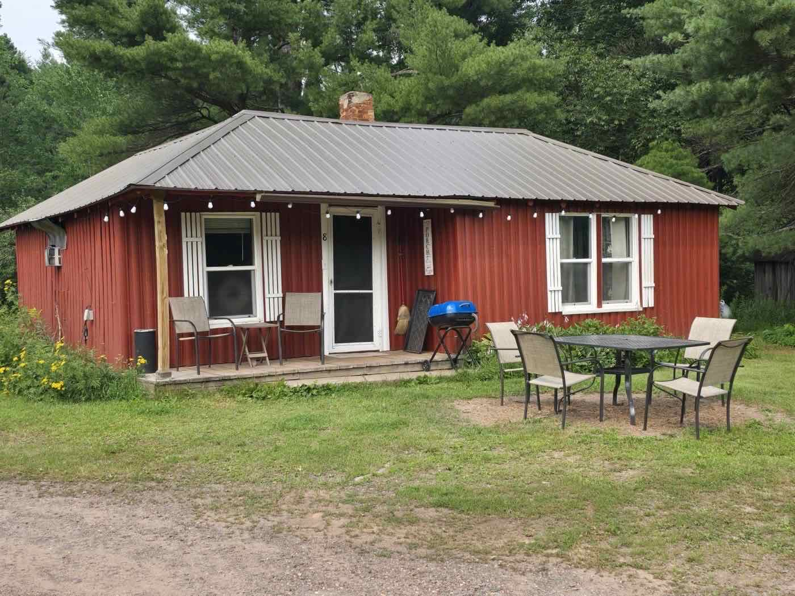
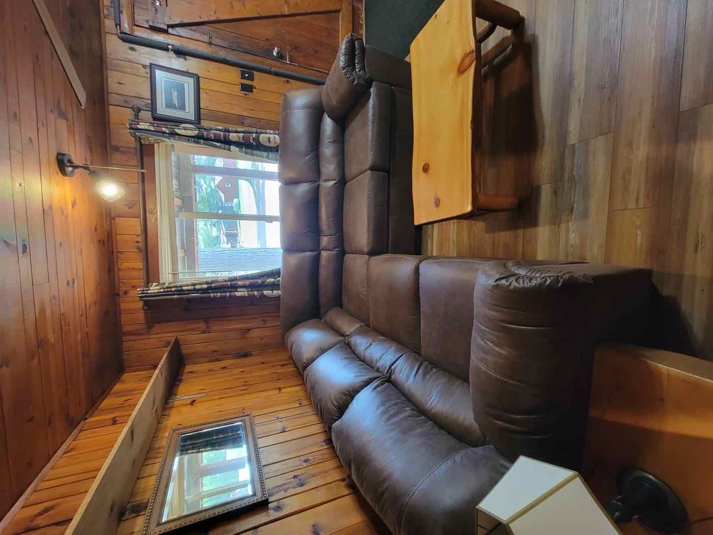
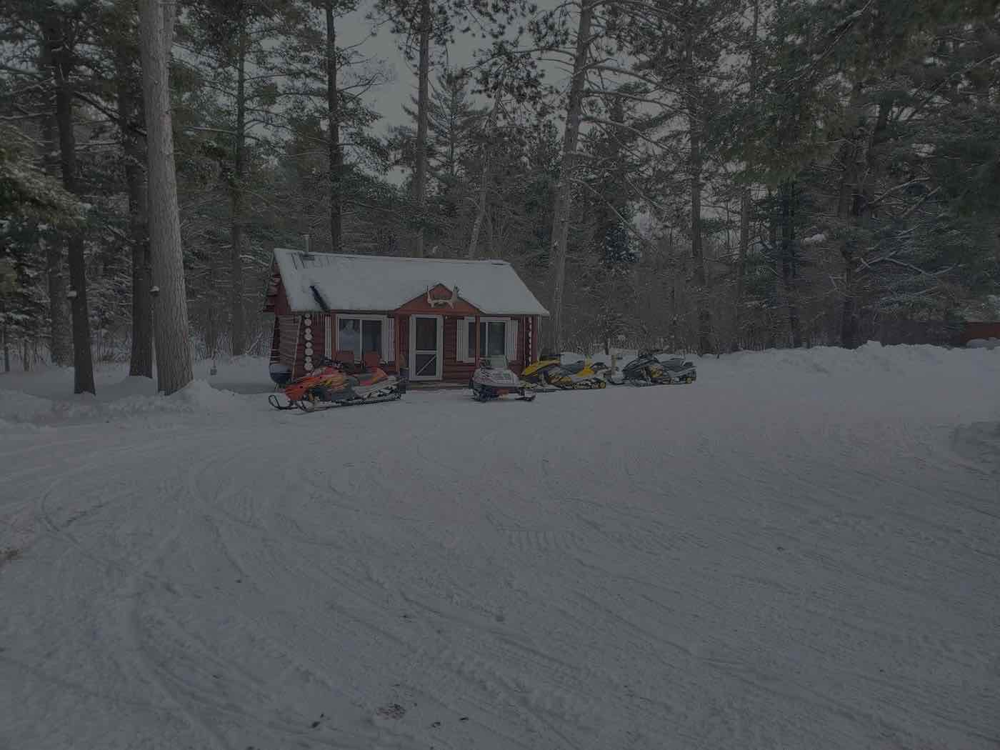

Rustic Cabins in Michigan's Western U.P.
Rustic charm. Clean & cozy. Built in the 1930s, with trees from our own land.
All cabins include a hair dryer, dishes, utensils, coffee pot, paper towels, kitchen towels, toaster & microwave. All cabins have Roku TVs & Direct TV.
Stay in one of our four vintage log cabins—built in the 1930s–40s and lovingly updated for comfort and simplicity. Each cabin offers a full kitchen, private bath, and cozy living space, with original wood interiors that feel like a true Northwoods retreat. Perfect for families, outdoor adventurers, or anyone looking to slow down and unplug.
Meet the Cabins
('
\nCabin #1 — The Fishing Cabin
\n- \n
- Two bedrooms — one full bed and one twin over full bunk bed
- Sleeps up to 5 in beds
- Large couch — perfect for relaxing after a day out
- Full kitchen with cookware
- Private shower · Hair dryer
- Roku TV, Wi-Fi, seasonal A/C
- Heated by central outdoor wood boiler
- Charcoal grill + shared fire pit access \n
Step into the cozy charm of Cabin #1, affectionately known as The Fishing Cabin. This two-bedroom log cabin comfortably sleeps up to 5 with a full bed and a “twin over full” bunk bed—perfect for families or small groups. You\'ll love the stocked kitchen, comfy living area with a large couch, and the private charcoal grill just outside. With original wood beams and rustic, fishing themed touches throughout, this cabin blends nostalgic character with modern essentials.
\n Book this Cabin\nCabin #6 — The Waterfall Cabin
- Two bedrooms — both with a twin over full bunk bed
- Sleeps up to 6 in beds
- Large couch · Full kitchen with cookware
- Private shower · Hair dryer
- Roku TV, Wi-Fi, seasonal A/C
- Heated by central outdoor wood boiler
- Charcoal grill + shared fire pit access
Tucked near the tree line, Cabin #6 (The Waterfall Cabin) offers peace, privacy, and just the right amount of rustic charm. This cabin features two comfy “twin over full” beds, a full kitchen stocked with cookware and appliances, and a cozy open living space—ideal for couples or groups who want to relax and recharge. Sip your morning coffee on the porch, grill up dinner outside, or take a short stroll to the nearby fire pit.
Book this Cabin

Cabin #7 — The Hunting Cabin
- Two bedrooms — one full bed and one twin over full bunk bed
- Sleeps up to 5 in beds
- Cute rustic log couch · Full kitchen with cookware
- Large, private shower · Hair dryer
- Roku TV, Wi-Fi, seasonal A/C
- Heated by propane fireplace
- Charcoal grill + shared fire pit access
Charming and efficient, Cabin #7 (The Hunting Cabin) is a two-bedroom hideaway with a full bed in one room and a “twin over full” bunk in the other, perfect for a quiet stay after exploring the western U.P. It includes a well-equipped kitchen (yes, even a crockpot!), a quaint living space with a cute rustic log couch and Roku TV.
Book this CabinCabin #8 — The Times Past Cabin
- One bedroom — two twin over full bunk beds and one twin over twin bunk bed
- Sleeps up to 8 in beds
- Large couch · Full kitchen with cookware
- Large, private shower · Hair dryer
- Roku TV, Wi-Fi, seasonal A/C
- Heated by propane fireplace
- Charcoal grill + shared fire pit access
Cabin #8 is a one-bedroom classic that balances vintage charm with cozy comfort. With bunk beds for up to 8, a full kitchen, and all the essentials—including a toaster, cookware, and fridge—it's ready for relaxed mornings and peaceful nights. Guests love the outdoor grill, quiet surroundings, and easy access to nature trails and nearby adventure.
Book this Cabin
What's Included in the Cabins
- 🍴 Full Kitchen
- 🛀 Shower
- 💭 Hair Dryer
- 🪑 Dining Table
- ❄️ A/C (seasonal)
- 🧩 Indoor & Outdoor Games
- 📶 Free Wi-Fi
- 📺 Roku TV
- 🔥 Charcoal Grill & Fire Pit Access
- 🍳 Crock-Pot & Coffee Pot
Unplug with a book from our Little Library, located between Motel Room #5 and Cabin #6.
Booking Info & Guest Expectations
- No smoking indoors ($250 fee if violated).
- Minimum stay: 2 nights.
- Cancellation: 50% fee if within 14 days of check-in.
- Credit card payments incur 3% fee (cash preferred).
- We may allow single-night stays by phone (based on availability).
Ready to Stay With Us?
Book now or check availability to reserve your rustic cabin getaway in the western U.P.